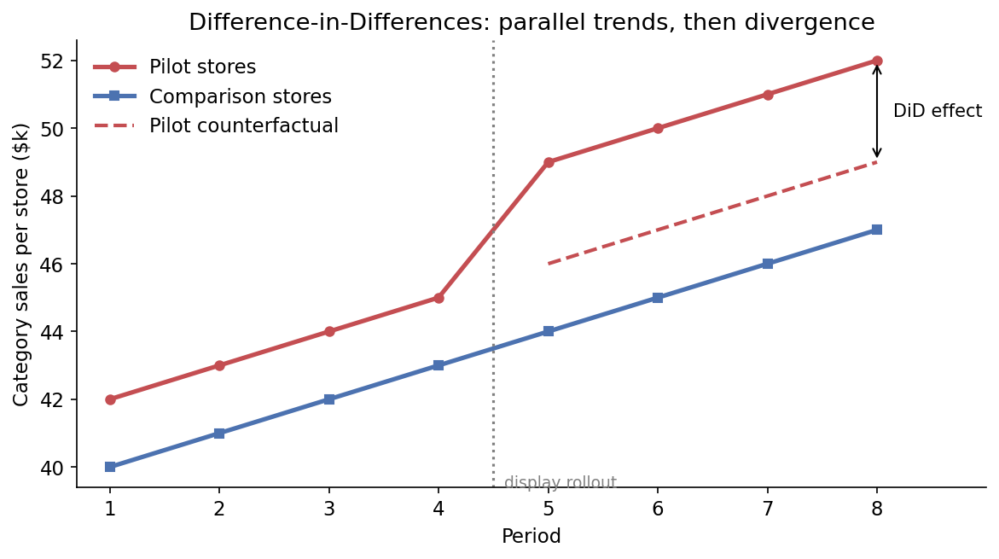
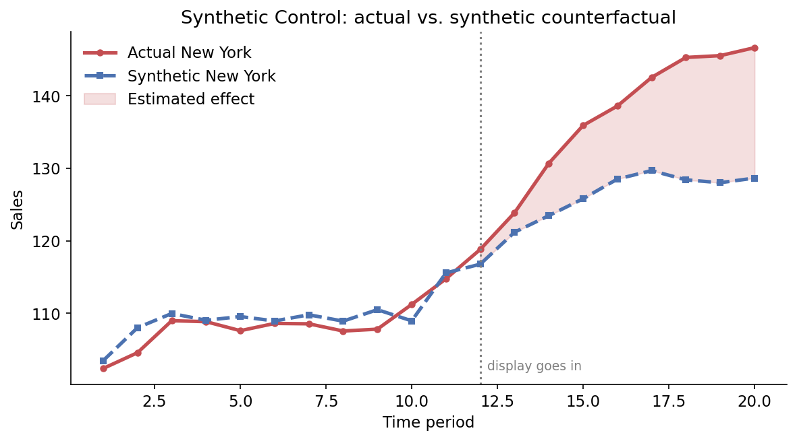

3.3 Quasi-expériences
À propos de la version française
Cette page est une traduction par IA de la version anglaise de Marketing Science in Python. La version anglaise fait foi et prévaut en cas de divergence. Le code, les notebooks et le texte intégré aux images restent en anglais. Lire la version anglaise
Le test A/B est la méthode de référence pour mesurer les relations de cause à effet. Attribuez le traitement au hasard, et le groupe témoin vous indique ce qui se serait passé sans lui. Mais il n’est pas toujours possible d’en mener un. Comme l’expliquait la section 3.1, de nombreuses raisons peuvent exclure le recours à un test A/B.
Lorsque vous ne pouvez pas randomiser, vous recourez à une quasi-expérience. Une quasi-expérience estime les relations de cause à effet sans assignation aléatoire. Elle exploite les possibilités de comparaison laissées par le processus opérationnel : un seuil, un déploiement qui a épargné certaines unités, une date de lancement. C’est là toute la difficulté. Un déploiement non aléatoire ne constitue pas automatiquement une quasi-expérience exploitable. Il doit laisser une comparaison dont vous pouvez défendre les hypothèses, et chaque protocole de ce chapitre s’accompagne de l’hypothèse que vous devrez défendre.
Ce chapitre présente trois protocoles : la régression sur discontinuité (RDD), les doubles différences (DiD) et le contrôle synthétique. Chacun exige des unités non traitées auxquelles se comparer : un groupe témoin de magasins qui n’ont pas reçu le présentoir, ou un ensemble de magasins à combiner pour en constituer un. Le quatrième protocole, CausalImpact, s’applique lorsqu’il n’existe aucune unité non traitée. Il fait l’objet du chapitre suivant.
Quel protocole convient à votre situation ?
Quatre protocoles, cela fait beaucoup de choix, et leurs noms ne vous disent pas lequel il vous faut. Appliquons-les donc tous à un même problème concret. Une enseigne possède 100 magasins. Elle a déployé un nouveau présentoir en magasin et veut savoir quel a été son effet sur les ventes de la catégorie.
La première question est toujours la même : le présentoir a-t-il été attribué au hasard ? Si oui, les magasins non traités constituent votre groupe témoin et vous revenez à la section 3.2. Sinon, c’est son mode d’attribution qui détermine le protocole.
| Qui a reçu le présentoir | Protocole | La comparaison |
|---|---|---|
| 50 magasins, choisis au hasard | Test A/B | Les 50 autres |
| Tous les magasins dont le chiffre d’affaires annuel dépasse $1M | RDD | Les magasins juste en dessous de $1M comparés à ceux juste au-dessus, et uniquement ceux-là |
| 50 magasins, choisis par l’équipe commerciale | DiD | Les 50 autres, avant et après |
| Le magasin de New York uniquement | Contrôle synthétique | Une combinaison pondérée des 99 autres, ajustée sur les ventes passées |
| Les 100, le même jour | CausalImpact (chapitre suivant) | Une prévision fondée sur l’historique de l’enseigne et sur des séries de marché que le présentoir ne pouvait pas affecter |
Chaque ligne porte sur les mêmes 100 magasins. Ce qui change, c’est la manière dont le présentoir a été attribué, et cela détermine à la fois le protocole et les données nécessaires : la variable d’assignation pour la RDD, un panel avant-après pour les DiD, une longue période préalable et un ensemble de magasins non traités pour le contrôle synthétique. Cinquante magasins choisis au hasard et cinquante choisis par l’équipe commerciale peuvent produire la même feuille de calcul, mais seul le premier cas est une expérience. C’est la règle de tout ce chapitre. L’assignation détermine le protocole. Les données déterminent ensuite si ce protocole est crédible.
Ce tableau présente les cinq options d’une enseigne. Figure 1 en fait un guide d’orientation pour tout déploiement : deux questions auxquelles répondre par oui ou par non, puis un choix qui dépend de la quantité de données non traitées dont vous disposez encore.

Ces quatre protocoles ne sont pas non plus quatre astuces sans rapport entre elles. L’un d’eux, la RDD, utilise un seuil et rien d’autre. Les trois autres forment une échelle. Les DiD empruntent la tendance des magasins témoins. Le contrôle synthétique combine des magasins témoins pour construire une meilleure comparaison lorsqu’aucun ne convient à lui seul. CausalImpact prévoit la comparaison lorsqu’il n’existe aucun magasin témoin. Chaque échelon s’appuie davantage sur un modèle. Ce chapitre couvre la RDD et les deux premiers échelons.
Régression sur discontinuité (RDD)
Idée centrale : au voisinage immédiat du seuil, l’assignation est aussi bonne qu’une assignation aléatoire.
Partons de la deuxième ligne de Table 1. Au lieu de choisir les magasins, l’équipe commerciale a fixé une règle : tout magasin dont le chiffre d’affaires annuel dépasse $1M reçoit le nouveau présentoir. Les magasins pilotes sont désormais les plus grands par construction. Les comparer aux autres ne ferait que mesurer ce que signifie être un grand magasin.
Mais regardez les magasins proches du seuil. Un magasin réalisant $1.02M et un autre réalisant $0.98M ont à peu près la même taille, servent des clients similaires et organisent des promotions similaires. Le côté de $1M où ils se trouvent relève presque du pile ou face. La RDD le traite comme tel. Elle compare les résultats juste au-dessus du seuil à ceux juste en dessous, et si les ventes de la catégorie font un saut à $1M, ce saut est l’effet du présentoir. La même logique vaut pour les clients : si ceux qui ont dépensé au moins $500 par le passé reçoivent un coupon, comparez les clients à $502 à ceux à $498.
Quand la RDD ne fonctionne pas
La RDD exige beaucoup d’unités près du seuil, car elle n’utilise que celles-là. Sur 100 magasins, une dizaine se trouvent peut-être à quelques pour cent de $1M, ce qui est trop peu pour ajuster une droite de chaque côté et discerner un saut au-delà du bruit. Avec 20 000 clients proches de $500, ce n’est plus le cas. Voilà pourquoi la RDD est surtout un outil d’analyse au niveau du client en marketing : coupons ou points attribués selon les dépenses passées, seuils de score des prospects pour les prises de contact commerciales. Figure 2 illustre cette version.

Deux autres limites. L’effet est local : le saut à $500 indique ce que le coupon a changé pour les clients qui dépensent environ $500, pas pour ceux qui dépensent $5,000. Et les unités ne doivent pas pouvoir franchir délibérément le seuil. Si un programme de fidélité fait passer les clients au niveau supérieur à $1,000 et qu’ils le savent, certains feront un achat supplémentaire en décembre pour le franchir. Si un responsable de magasin touche une prime en atteignant $1M, les magasins à $0.97M en novembre trouvent un moyen de terminer à $1.01M. Dans les deux cas, les unités juste au-dessus du seuil sont celles qui ont fait davantage d’efforts, et la RDD interprète cela comme l’effet du traitement. Un histogramme de la variable d’assignation montrant une concentration juste au-dessus du seuil est le signe révélateur. Avec un tel seuil, la RDD ne peut pas être utilisée.
Doubles différences (DiD)
Idée centrale : comparez les variations, pas les niveaux. La variation du groupe témoin au fil du temps représente ce qu’aurait fait le groupe traité.
Passons à la troisième ligne de Table 1 : l’équipe commerciale a choisi 50 magasins pour le nouveau présentoir, et 50 magasins comparables ont conservé l’agencement habituel des rayons. Vous disposez des ventes de la catégorie par magasin, avant et après le déploiement, pour les deux groupes.
Les magasins pilotes sont passés de $42k à $48k. Le présentoir vaut donc $6k par magasin ?
Probablement pas. Les magasins de comparaison sont passés de $40k à $43k sans aucun présentoir. Quelque chose a fait progresser toute la catégorie d’environ $3k : la saisonnalité, la fréquentation, une rupture de stock chez un concurrent. Une comparaison avant-après limitée aux magasins pilotes attribue cette croissance du marché au présentoir.
Comparons donc plutôt les deux groupes après le déploiement. $48k contre $43k, cela fait $5k. Est-ce l’effet ?
Non plus. Les magasins pilotes avaient déjà $2k d’avance avant toute intervention, avec $42k contre $40k. L’équipe commerciale n’a pas choisi au hasard, et une comparaison entre groupe traité et groupe témoin sur la période postérieure attribue cette avance initiale au présentoir.
Chaque comparaison naïve échoue à cause d’un facteur de confusion différent. La comparaison avant-après capte la tendance temporelle commune. La comparaison entre groupe traité et groupe témoin capte l’écart préexistant entre les groupes. Prenez la différence des deux différences, et les deux s’annulent :
| Groupe de magasins | Avant | Après | Variation |
|---|---|---|---|
| Magasins pilotes | $42k | $48k | +$6k |
| Magasins de comparaison | $40k | $43k | +$3k |
| Estimation DiD | +$3k |
Les magasins pilotes ont progressé de $6k, les magasins de comparaison de $3k, et la différence est de $3k. Vous obtenez la même réponse dans l’autre sens : un écart de $5k après moins un écart de $2k avant. C’est la méthode des doubles différences. La tendance commune s’annule. Toute différence fixe entre les groupes aussi. Il reste la part de la variation des magasins pilotes que les magasins de comparaison ne peuvent pas expliquer.
Dans le code, l’estimation se réduit à ces deux différences :
import pandas as pd
did = pd.DataFrame({
"group": ["Pilot stores", "Comparison stores"],
"before": [42, 40], # category sales per store, $k
"after": [48, 43],
})
did["change"] = did["after"] - did["before"] # +6 and +3
did_estimate = did.loc[0, "change"] - did.loc[1, "change"]
print(f"DiD estimate: ${did_estimate}k") # DiD estimate: $3kLes DiD conviennent à la plupart des situations marketing où « certaines unités ont changé, d’autres non » : tests pilotes de présentoirs en magasin, réaménagements des rayons, déploiements de promotions par région, changements de prix sur certains marchés, fonctionnalité d’application lancée d’abord sur une seule plateforme.
L’hypothèse des tendances parallèles
Les DiD reposent sur des tendances parallèles (aussi appelées tendances communes) : sans le traitement, les deux groupes auraient suivi la même tendance. La tendance, pas le niveau. Les groupes peuvent partir de niveaux de ventes différents, comme les magasins pilotes. Ce qui compte, c’est que la variation du groupe de comparaison après le déploiement représente correctement ce qu’auraient fait les magasins pilotes sans intervention.
Vous ne pouvez jamais le vérifier complètement, car vous n’observez pas les magasins pilotes sans le présentoir. Mais vous pouvez examiner la période précédant le déploiement.

Tracez l’évolution des deux groupes et regardez la partie qui précède le présentoir. Si les deux courbes évoluent ensemble, les DiD sont crédibles. Des tendances préalables bien parallèles constituent une vérification de crédibilité, pas une preuve, mais c’est la vérification que tout le monde demandera.
Quand les DiD ne fonctionnent pas
Les DiD échouent lorsque l’équipe commerciale a choisi les magasins sur leur dynamique de croissance. Si elle a retenu des magasins qui progressaient déjà plus vite, les deux groupes ne partagent pas la même tendance, et l’estimation DiD s’attribue une croissance qui serait survenue de toute façon. Vous le verrez sur le graphique de la période préalable : les courbes divergeaient déjà avant le présentoir. Dans ce cas, ne forcez pas le recours aux DiD. Appariez les groupes plus soigneusement, pondérez les magasins de comparaison ou passez au contrôle synthétique.
Estimer les DiD par régression
Le tableau à deux lignes et deux colonnes exprime l’idée. Ce n’est pas ce que vous présenteriez dans un rapport, pour deux raisons. Il ne fournit pas d’erreur-type, donc vous ne pouvez pas dire si +$3k se distingue de zéro. Et les données réelles ne se limitent pas à deux périodes : ce sont 24 mois de ventes pour 100 magasins. La version par régression traite ces deux problèmes. Une ligne par magasin et par mois, un effet fixe pour chaque magasin, un effet fixe pour chaque mois et un terme d’interaction pour les magasins traités sur la période postérieure. Les effets magasin absorbent toutes les différences fixes entre magasins. Les effets mois absorbent toutes les tendances et tous les chocs qui ont touché l’ensemble des magasins ce mois-là. Le terme d’interaction est l’estimation DiD.
import statsmodels.formula.api as smf
# df: one row per store-month (store_id, period, treated, post, category_sales)
model = smf.ols(
"category_sales ~ C(store_id) + C(period) + treated:post",
data=df,
).fit(cov_type="cluster", cov_kwds={"groups": df["store_id"]})
coef, se = model.params["treated:post"], model.bse["treated:post"]
print(f"DiD estimate: {coef:.2f} (SE {se:.2f})") # DiD estimate: 3.02 (SE 0.04)Regrouper les erreurs-types par magasin permet de tenir compte des mesures répétées pour chaque magasin. La même régression vérifie les tendances préalables : remplacez treated:post par un terme treated × mois pour chaque mois et confirmez que les termes antérieurs au déploiement sont proches de zéro. Le notebook d’accompagnement détaille le panel complet et cette vérification.
Contrôle synthétique
Idée centrale : lorsqu’aucune unité témoin ne convient à elle seule, construisez-en une en combinant plusieurs unités.
Les DiD fonctionnaient parce que 50 magasins témoins fournissaient une tendance convaincante à emprunter. Prenons maintenant la quatrième ligne de Table 1 : seul le magasin de New York a reçu le présentoir. Lequel des 99 autres constitue la bonne comparaison ? Ils diffèrent par leur taille, la composition de leurs ventes par catégorie et la concurrence locale, et aucun magasin ne représente à lui seul un substitut convaincant à New York.
Le contrôle synthétique n’en choisit pas un. Il traite les 99 autres magasins comme un ensemble de donneurs et construit un « New York synthétique » en les combinant avec des pondérations choisies pour que la combinaison suive au plus près les ventes de New York avant l’installation du présentoir. Dans le notebook d’accompagnement, la combinaison obtenue se compose à 36 % du magasin de Boston, à 28 % de celui de Philadelphie, à 22 % de celui de Chicago, avec quelques pour cent répartis entre quatre autres magasins. Une fois le présentoir installé, l’écart entre le New York réel et son jumeau synthétique est l’effet estimé.

C’est le protocole naturel lorsqu’une unité reçoit le traitement et que de nombreuses unités similaires ne le reçoivent pas : un magasin rénové, une agglomération faisant l’objet d’une campagne d’affichage extérieur, une référence produit dont le prix change avec des références apparentées comme donneurs. Ces protocoles au niveau géographique reviennent dans la section 6.3 comme vérification de robustesse pour les expériences géographiques et dans la section 6.4 comme point d’ancrage pour calibrer les modèles de mix média.
Quand le contrôle synthétique ne fonctionne pas
La vérification de crédibilité porte sur l’ajustement pendant la période préalable. Si aucune combinaison des 99 magasins ne peut reproduire l’historique de New York avant le présentoir, ne vous fiez pas à l’écart après son installation. Les donneurs doivent aussi rester non affectés : un présentoir à New York ne modifie pas les ventes à Chicago, mais une campagne télévisée à New York peut toucher le New Jersey, et un donneur exposé au traitement entraîne le jumeau synthétique vers la trajectoire traitée. Cette méthode ne peut pas non plus s’appliquer à un seul client. Les dépenses hebdomadaires d’un client isolé se composent surtout de zéros et de bruit, et aucune combinaison d’autres clients ne les suivra. Les questions au niveau du client exigent de nombreux clients, ce qui relève des DiD ou de la RDD.
Lorsqu’il n’y a pas de groupe témoin
Les DiD empruntaient une tendance aux magasins témoins. Le contrôle synthétique combinait des magasins témoins lorsqu’aucun ne convenait à lui seul. La RDD comparait les magasins juste en dessous d’un seuil à ceux juste au-dessus. Tous trois empruntent la comparaison à des unités que l’action n’a pas touchées, et aucun ne peut aider lorsqu’elle a touché tout le monde :
- Le nouveau présentoir a été installé dans les 100 magasins le même jour.
- La campagne a été diffusée dans toutes les régions, et pas seulement dans quelques-unes.
- Le coupon a été envoyé à tous les clients.
Il n’existe aucun magasin, aucune région ni aucun client non traité auquel se comparer. Il faut donc prévoir la comparaison : à partir de l’évolution de la série avant l’action et de celle, après l’action, d’autres séries qu’elle ne pouvait pas affecter. C’est le dernier échelon de l’échelle, CausalImpact, qui fait l’objet du chapitre suivant.
Notebook d’accompagnement : sec3.3_quasi_experiments.ipynb présente la RDD, les DiD (tableau, régression et vérification des tendances préalables) et le contrôle synthétique sur des données synthétiques avec statsmodels et scipy.
Voir sur GitHub
Points à retenir
- L’assignation détermine le protocole. Randomisez et vous obtenez un test A/B ; un seuil donne une RDD ; les autres cas montent une échelle allant des DiD au contrôle synthétique, puis à CausalImpact, chaque échelon s’appuyant davantage sur un modèle.
- La crédibilité d’une quasi-expérience dépend de celle de son hypothèse d’identification. Un graphique des tendances préalables ou un ajustement sur la période préalable peut révéler un protocole fragile, mais réussir cette vérification atteste sa crédibilité sans constituer une preuve.